These features have been standardized for Unix systems as the Portable Operating System Interface (POSIX).
Unix Processes
Learn about processes in Unix operating systems, as well as how to manage them and make them communicate.
On this page
Table of contents
You will need
- A Unix CLI
- An Ubuntu server to connect to
Recommended reading
What is a process?
A process is an instance of a computer program that is being executed.
This is a C program. A program is a passive collection of instructions stored on disk:
#include <stdio.h>
int main()
{
printf("Hello, World!");
return 0;
}
A process is the actual execution of a program that has been loaded into memory:
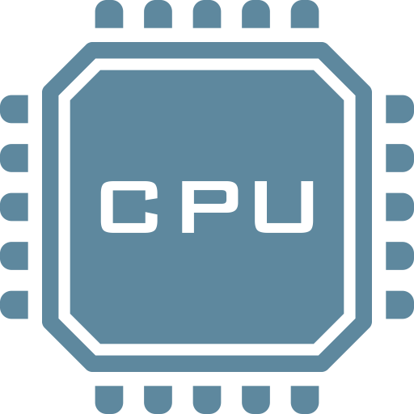
Every time you run an executable file or an application, a process is created. Simple programs only need one process. More complex applications may launch other child processes for greater performance. For example, most modern browsers will run at least one child process per tab.
Unix processes
Processes work differently depending on the operating system. We will focus on processes in Unix systems, which have the following features:
| Feature | Description |
|---|---|
| Process ID (PID) | A number uniquely identifying a process at a given time |
| Exit status | A number given when a process exits, indicating whether it was successful |
| Signals | Notifications sent to a process, a form of inter-process communication (IPC) |
| Standard streams | Preconnected input and output communication channels between a process and its environment |
| Pipelines | A way to chain processes in sequence by their standard streams, a form of inter-process communication (IPC) |
Process ID
Let’s talk about how running processes are identified.
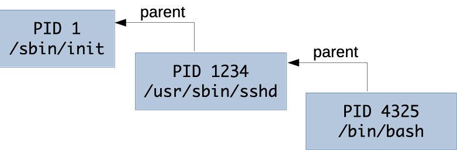
What is a process identifier?
Any process that is created in a Unix system is assigned an identifier (or
PID). Each new process gets the next available PID. This ID can be used to
reference the process, for example to terminate it with the kill command (more
about that later).
PIDs are sometimes reused as processes die and are created again, but at any given time, a PID uniquely identifies a specific process.
By default, the maximum PID on Linux systems is 32,768 on 32-bit systems, and 4,194,304 (~4 million) on 64-bit systems.
Parent processes
The process with PID 0 is the system process, also originally known as the swapper or scheduler. This is the most low-level process managed directly by the kernel.
One of the first thing it does is run the init process, which naturally gets PID 1 (the next available PID). The init process is responsible for initializing the system. Most other processes are either launched by the init process directly, or by one of its children.
All processes retain a reference to the parent process that launched it. The ID of the parent process is commonly called PPID (parent process ID).
The ps command
The ps (process status) command displays currently-running processes:
$> ps
PID TTY TIME CMD
14926 pts/0 00:00:00 bash
14939 pts/0 00:00:00 ps
By default, it only lists your user’s processes that have a controlling terminal
(TTY).
You can obtain more information with the -f (full format) option:
$> ps -f
UID PID PPID C STIME TTY TIME CMD
jde 15237 15158 1 17:48 pts/0 00:00:00 -bash
jde 15251 15237 0 17:48 pts/0 00:00:00 ps -f
We are mostly interested in the Process ID (PID), the parent
Process ID (PPID) and of course the command (CMD) that
is being run. But the others also provide useful
information.
Listing all processes
Of course, there are more than 2 processes running on your computer. Add the
-e (every) option to see all running processes. The list will be much
longer. This is an abbreviated example:
$> ps -ef
UID PID PPID C STIME TTY TIME CMD
root 1 0 0 09:38 ? 00:00:30 /sbin/init
root 2 0 0 09:38 ? 00:00:30 [kthread]
...
root 402 1 0 09:39 ? 00:00:00 /lib/systemd/systemd-journald
syslog 912 1 0 09:39 ? 00:00:00 /usr/sbin/rsyslogd -n
root 1006 1 0 09:39 ? 00:00:00 /usr/sbin/cron -f
...
root 1700 1 0 Sep11 ? 00:00:00 /usr/sbin/sshd -D
jde 3350 1700 0 17:52 ? 00:00:00 sshd: jde@pts/0
jde 3378 3350 0 15:32 pts/0 00:00:00 -bash
jde 3567 3378 0 15:51 pts/0 00:00:00 ps -ef
Note that the command you just ran, ps -ef, is in the process list (at the
bottom in this example). This is because it was running while it was listing the
other processes.
Process tree
On some Linux distributions like Ubuntu, the ps command also accepts a
--forest option which visually shows the relationship between processes and
their parent:
$> ps -ef --forest
UID PID PPID C STIME TTY TIME CMD
...
root 1700 1 0 Sep11 ? 00:00:00 /usr/sbin/sshd -D
jde 3350 1700 0 17:52 ? 00:00:00 \_ sshd: jde@pts/0
jde 3378 3350 0 17:52 pts/0 00:00:00 \_ -bash
jde 3567 3378 0 17:54 pts/0 00:00:00 \_ ps -ef --forest
You can clearly see that:
- Process 1700, the SSH server (the
dinsshdis for daemon), was launched by the init process (PID 1) and is run byroot. - Process 3350 was launched by the SSH server when you connected. It is your SSH
session and manages your terminal device, named
pts/0here. - Process 3378 is a Bash login shell that was launched when you connected (as
configured in
/etc/passwd) and is attached to terminalpts/0. - Process 3567 is the
pscommand you launched from the shell.
Running more processes
Let’s run some other processes and see if we can list them.
Open a new terminal on your local machine and connect to the same server.
If you go back to the first terminal and run the ps command again, you should
see both virtual terminal processes corresponding to your two terminals, as well
as the two bash shells running within them:
$> ps -ef --forest
...
root 1700 1 0 Sep11 ? 00:00:00 /usr/sbin/sshd -D
jde 3350 1700 0 17:52 ? 00:00:00 \_ sshd: jde@pts/0
jde 3378 3350 0 17:52 pts/0 00:00:00 | \_ -bash
jde 3801 3378 0 18:22 pts/0 00:00:00 | \_ ps -ef --forest
jde 3789 1700 0 18:21 ? 00:00:00 \_ sshd: jde@pts/1
jde 3791 3789 0 18:21 pts/1 00:00:00 \_ -bash
Sleeping process
Run a sleep command in the second terminal:
$> sleep 1000
It launches a process that does nothing for 1000 seconds, but keeps running.
It will block your terminal during that time, so go back to the other terminal
and run the following ps command, with an additional -u jde option to filter
only processes belonging to your user:
$> ps -f -u jde --forest
UID PID PPID C STIME TTY TIME CMD
...
jde 3350 1700 0 17:52 ? 00:00:00 sshd: jde@pts/0
jde 3378 3350 0 17:52 pts/0 00:00:00 \_ -bash
jde 3823 3378 0 18:24 pts/0 00:00:00 \_ ps -f -u jde --forest
jde 3789 1700 0 18:21 ? 00:00:00 sshd: jde@pts/1
jde 3791 3789 0 18:21 pts/1 00:00:00 \_ -bash
jde 3812 3791 0 18:23 pts/1 00:00:00 \_ sleep 1000
You can indeed see the running process started with the sleep command.
You can stop it with Ctrl-C (in the terminal when it’s running) when you’re done.
Other monitoring commands
Here are other ways to inspect processes and have more information on their resource consumption:
- The
htopcommand (a better version of the oldertopcommand, meaning table of processes, named after its creator, Hisham’s top), shows processes along with CPU and memory consumption. It’s an interactive command you can exit withq(quit). - The
freecommand is not directly related to processes, but it helps you know how much memory is remaining on your system.
$> free -m
total used free shared buff/cache available
Mem: 985 90 534 0 359 751
Swap: 0 0 0
The -m option of the free command displays memory size in
mebibytes, a more human-readable quantity, instead of bytes.
Welcome to the future
Some of the previously-mentioned commands may be older than you, although they are regularly updated. But new command line tools are also being developed today:
- The
procscommand is a modern interactive alternative to thepscommand for listing processes, written in Rust, a modern systems programming language. - The
btmcommand is a modern alternative tohtopandtopwith more features, also written in Rust.
Exit status
How children indicate success to their parent.
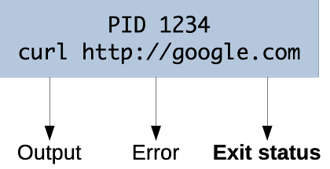
What is an exit status?
The exit status of a process is a small number (typically from 0 to 255) passed from a child process to its parent process when it has finished executing.
It is meant to allow the child process to indicate how or why it exited.
It’s common practice for the exit status of Unix/Linux programs to be 0 to indicate success, and greater than 0 to indicate an error (it is sometimes also called an error level).
Retrieving the exit status in a shell
In a typical shell like Bash, you can retrieve the exit status of last
executed command from the special variable $?:
$> ls /
...
$> echo $?
0
$> ls file-that-does-not-exist
ls: cannot access 'file-that-does-not-exist': No such file or directory
$> echo $?
2
Retrieving the exit status in code
Exit codes are not a feature that is limited to command line use. When running a program from an application, you can also obtain the exit status.
For example:
- By using the
&$return_varreference when calling PHP’sexecfunction - By calling the
Process#exitValue()method after callingRuntime#exec(String command)in Java - By listening to the
closeevent when calling Node.js’sspawnfunction
Meaning of exit statuses
The meaning of exit statuses is unique to the program you are running. For
example, the manual of the ls command documents the following values:
Exit status:
0 if OK,
1 if minor problems (e.g., cannot access subdirectory),
2 if serious trouble (e.g., cannot access command-line argument).
But this will be different for other programs or applications.
The only thing you can rely on for the majority of programs is that 0 is good, anything else is probably bad.
Signals
What is a signal?
A signal is an asynchronous notification sent to a process to notify it that an event has occurred. Signals are sent by other processes or by the system (i.e. the kernel).
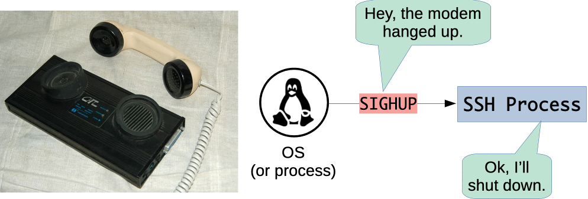
If the process has registered a signal handler for that specific signal, it is executed. Otherwise the default signal handler is executed.
Common Unix signals
A signal is defined by the SIG prefix followed by a mnemonic name for the
signal. Some signals also have a standard number assigned to them. Here are some
of the most commonly encountered Unix signals:
| Signal | Number | Default handler | Description |
|---|---|---|---|
SIGHUP |
1 | Terminate | Hangup (i.e. connection lost) |
SIGINT |
2 | Terminate | Interrupt signal (sent when you use Ctrl-C) |
SIGTERM |
15 | Terminate | Termination signal (default signal sent by the kill command) |
SIGQUIT |
3 | Terminate (with core dump) | Termination signal |
SIGKILL |
9 | Terminate | Kill (cannot be caught or ignored) |
SIGUSR1 |
- | Terminate | User-defined signal 1 |
SIGUSR2 |
- | Terminate | User-defined signal 2 |
SIGWINCH |
- | Ignore | Terminal window size changed |
You can list available signals on your system by running kill -l. Here’s
a more complete list: POSIX signals.
The terminal interrupt signal (SIGINT)
When you type Ctrl-C in your terminal to terminate a running process, you are
actually using Unix signals.
The shortcut is interpreted by your shell, which then sends a terminal
interrupt signal, or SIGINT, to the running process.
Most processes handle that signal by terminating (altough some don’t respond to
it, like some interactive helps, e.g. man ls).
The kill command
The kill command sends a signal to a process.
Since the default signal handler for most signals is to terminate the process, it often has that effect, hence the name “kill”.
Its syntax is:
kill [-<SIGNAL>] <PID>
kill [-s <SIGNAL>] <PID>
| Command | Effect |
|---|---|
kill 10000 |
Send the default SIGTERM signal to process with PID 10000 |
kill -s HUP 10000 |
Send the SIGHUP signal to that same process |
kill -HUP 10000 |
Equivalent to the previous command |
kill -1 10000 |
Equivalent to the previous command (1 is the official POSIX number for SIGHUP) |
Trapping signals
This command will run a badly behaved script which traps and ignores all signals sent to it:
$> curl -s -L https://git.io/JitFQ|sh -s
Hi, I'm running with PID 10000
Try and kill me!
Since it ignores the SIGINT signal among others,
you will not be able to stop it with Ctrl-C.
Open another terminal and try to kill the process by referring to its PID
(which is 10000 in this example but will be different on your machine):
$> kill 10000
$> kill -s HUP 10000
$> kill -s QUIT 10000
$> kill -s USR1 10000
The script will simply log that it is ignoring your signal and continue executing.
The KILL signal
There is one signal that cannot be ignored: the KILL signal.
Although a process can detect the signal and attempt to perform additional operations, the OS will permanently kill the process shortly after it is received, and the process can do nothing to prevent it.
Send a KILL signal to the process with the same PID as before:
$> kill -s KILL 10000
The script will finally have the decency to die.
Unix signals in the real world
Many widely-used programs react to Unix signals, for example:
A common example is the SIGHUP signal. Originally it was meant to indicate
that the modem hanged up.
That’s not relevant to programs not directly connected to a terminal, but some programs repurposed it for another use.
Many background services like Nginx and PostgreSQL will reload their configuration (without shutting down) when receiving that signal. Many other tools follow this convention.
Standard streams
Standard streams are preconnected input and output communication channels between a process and its environment.
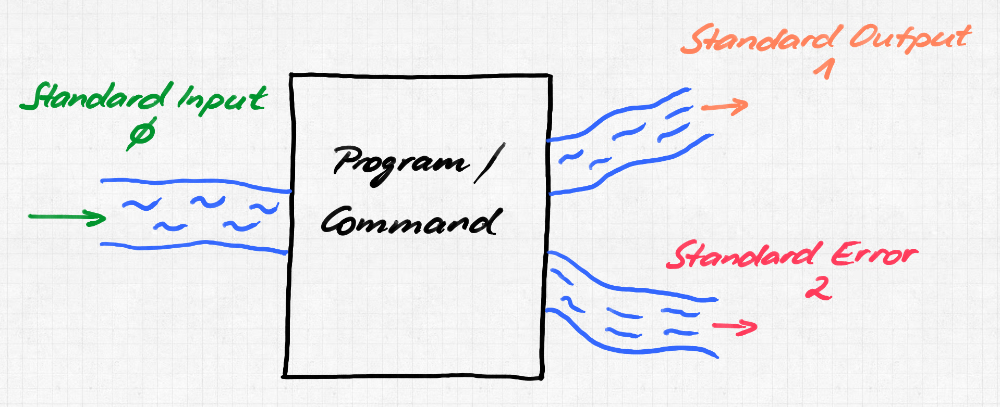
The good old days
In pre-Unix (before 1970) systems, programs had to explicitly connect to input and output devices. This was done differently for each device (e.g. magnetic tape drive, disk drive, printer, etc) and operating system. For example, IBM mainframes used a Job Control Language (JCL) to establish connections between programs and devices.
Unix file copy
cp a.txt b.txt
JCL copy instructions for OS/360
//IS198CPY JOB (IS198T30500),'COPY JOB',CLASS=L,MSGCLASS=X
//COPY01 EXEC PGM=IEBGENER
//SYSPRINT DD SYSOUT=*
//SYSUT1 DD DSN=a.txt,DISP=SHR
//SYSUT2 DD DSN=b.txt,
// DISP=(NEW,CATLG,DELETE),
// SPACE=(CYL,(40,5),RLSE),
// DCB=(LRECL=115,BLKSIZE=1150)
//SYSIN DD DUMMY
Unix streams
Unix introduced abstract devices and the concept of a data stream: an ordered sequence of data bytes which can be read until the end of file (EOF).
A program may also write bytes as desired and need not declare how many there will be or how to group them. The data going through a stream may be text (with any encoding) or binary data.
This was groundbreaking at the time because a program no longer had to know or care what kind of device it is communicating with, as had been the case until then.
stdin, stdout & stderr
Any new Unix process is automatically connected to the following streams by default:
| Stream | Shorthand | Description |
|---|---|---|
| Standard input | stdin |
Stream data (often text) going into a program |
| Standard output | stdout |
Stream where a program writes its output data |
| Standard error | stderr |
Another output stream programs can use to output error messages or diagnostics (separate from standard output, allowing output and errors to be distinguished, solving the semipredicate problem) |
Streams, the keyboard, and the terminal
Another Unix breakthrough was to automatically associate:
- The input stream with your terminal keyboard;
- The output and error streams with your terminal display.
This is done by default unless a program chooses to do otherwise.
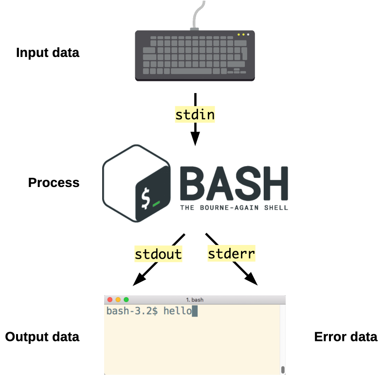
For example, when your favorite shell, e.g. Bash, is running, it automatically receives keyboard input, and its output data and errors are automatically displayed in the terminal.
Stream inheritance
A child will automatically inherit the standard streams of its parent process (unless redirected, more on that later).
For example, when you run an ls command, you do not have to specify that the
resulting list of files should be displayed in the terminal. The standard output
of the parent process, in this case your shell (e.g. Bash) is inherited by the
ls process.
Similarly, when you run the ssh command to communicate with another machine,
you do not have to explicitly connect your keyboard input to this new process.
As the SSH client is a child process of the shell, it inherits the same standard
input.
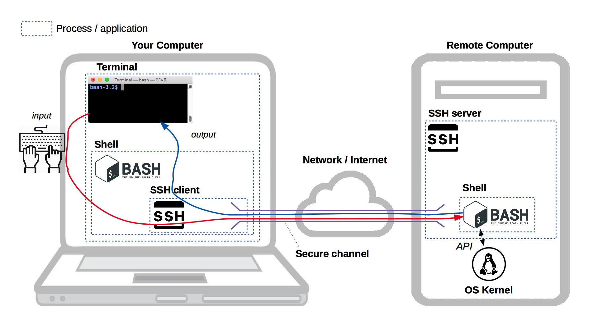
Optional input stream
A process is not obligated to use its input or output streams. For example,
the ls command produces output (or an error) but takes no input (it
has arguments, but that does not come from the input data stream).
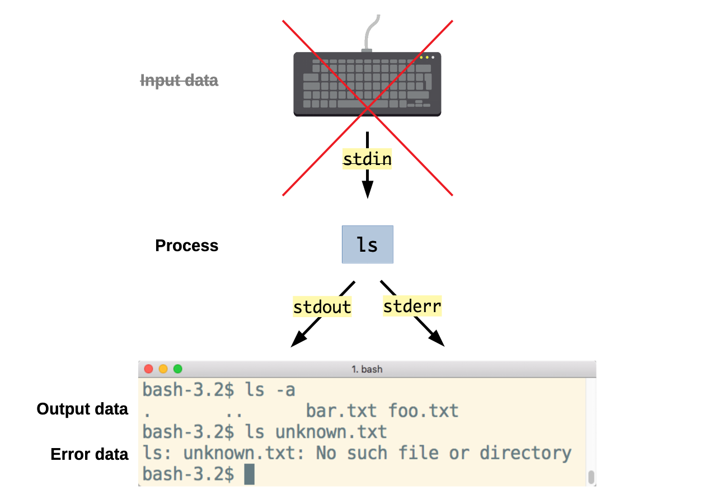
Optional output stream
The cd command takes no input and produces no output either,
although it can produce an error.
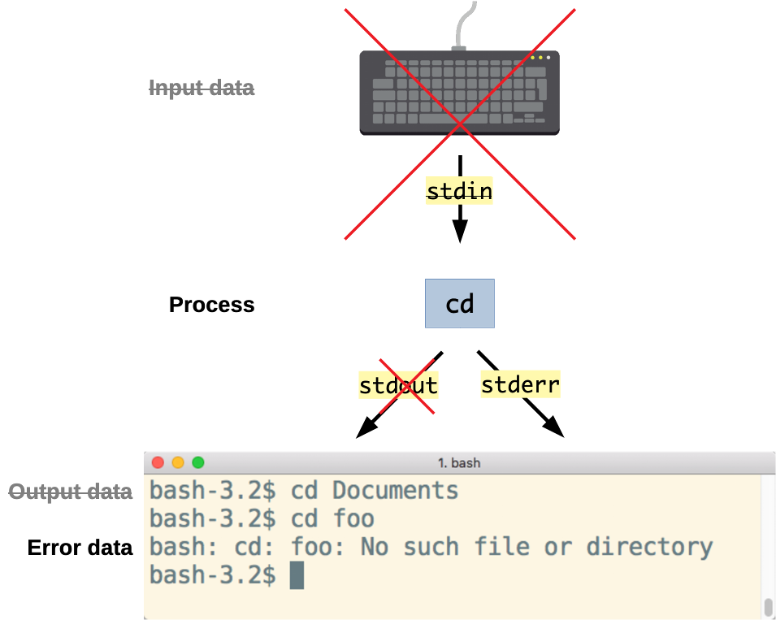
Stream redirection
The standard streams can be redirected.
Redirection means capturing output from a file or command, and sending it as input to another file or command.
Any Unix process has a number of file descriptors. They are an abstract indicator used to access a file or other input/output resource such as a pipe (we’ll talk about these later) or socket.
The first three file descriptors correspond to the standard streams by default:
| File descriptor | Stream |
|---|---|
0 |
Standard input (stdin) |
1 |
Standard output (stdout) |
2 |
Standard error (stderr) |
Redirect standard output stream
The > shell operator redirects an output stream.
For example, the following line runs the ls command, but instead of displaying
the result in the terminal, the standard output stream (file descriptor 1)
is redirected to the file data.txt:
$> ls -a 1> data.txt
$> ls
data.txt
$> cat data.txt
.
..
file1
directory1
...
How to use standard output redirection
You can do the same with any command that produces output:
$> echo Hello 1> data.txt
$> cat data.txt
Hello
Note that the > operator overwrites the file. Use >> instead to append
to the end of the file:
$> echo World 1>> data.txt
$> cat data.txt
Hello
World
If you specify no file descriptor, standard output is redirected by default:
$> echo Hello > data.txt
$> echo Again >> data.txt
$> cat data.txt
Hello
Again
Redirect standard error stream
Note that error messages are not redirected using the redirect operator (>)
like in the previous example. Errors are still displayed in the terminal and the
file remains empty:
$> ls unknown-file > error.txt
ls: unknown-file: No such file or directory
$> cat error.txt
This is because most commands send errors to the standard error stream (file
descriptor 2) instead of the standard output stream.
If you want to redirect the error message to a file, you must redirect the standard error stream instead:
$> ls unknown-file 2> error.txt
$> cat error.txt
ls: unknown-file: No such file or directory
Both standard output and error streams
Some commands will send data to both output streams (standard output and standard error). As we’ve seen, both are displayed in the terminal by default.
For example, the curl (Client URL) command is used to make HTTP
requests. By default, it only outputs the HTTP response body to the standard
output stream, but with the -v (verbose) option it also prints diagnostics
information to the standard error stream:
$> curl -L -v https://git.io/fAp8D
% Total % Received % Xferd Average Speed Time Time Time Current
Dload Upload Total Spent Left Speed
0 0 0 0 0 0 0 0 --:--:-- --:--:-- --:--:-- 0
TCP_NODELAY set
Connected to git.io (54.152.127.232) port 443 (#0)
...
Hello World
...
Here, Hello World is the output data, while the rest of the output is the
diagnostics information on the standard error stream.
Redirect standard output stream (curl)
This example demonstrates how the standard output and error streams can be redirected separately.
The following version redirects standard output to the file curl-output.txt:
$> curl -L -v https://git.io/fAp8D > curl-output.txt
% Total % Received % Xferd Average Speed Time Time Time Current
Dload Upload Total Spent Left Speed
0 0 0 0 0 0 0 0 --:--:-- --:--:-- --:--:-- 0
TCP_NODELAY set
Connected to git.io (54.152.127.232) port 443 (#0)
...
$> cat curl-output.txt
Hello World
As you can see, the Hello World output data is no longer displayed since it
has been redirected to the file, but the diagnostics information printed on the
standard error stream is still displayed.
Redirect standard error stream (curl)
The following version redirects standard error to the file curl-error.txt:
$> curl -L -v https://git.io/fAp8D 2> curl-error.txt
Hello World
$> cat curl-error.txt
% Total % Received % Xferd Average Speed Time Time Time Current
Dload Upload Total Spent Left Speed
0 0 0 0 0 0 0 0 --:--:-- --:--:-- --:--:-- 0
TCP_NODELAY set
Connected to git.io (54.152.127.232) port 443 (#0)
...
This time, the Hello World output data is displayed in the terminal as with
the initial command, but the diagnostics information has been redirected to the
file.
Redirect both standard output and error streams (curl)
You can perform both redirections at once in one command:
$> curl -L -v https://git.io/fAp8D > curl-output.txt 2> curl-error.txt
$> cat curl-error.txt
% Total % Received % Xferd Average Speed Time Time Time Current
Dload Upload Total Spent Left Speed
0 0 0 0 0 0 0 0 --:--:-- --:--:-- --:--:-- 0
TCP_NODELAY set
Connected to git.io (54.152.127.232) port 443 (#0)
...
$> cat curl-output.txt
Hello World
Combine standard output and error streams (curl)
In some situations, you might want to redirect all of a command’s output (both the standard output stream and error stream) to the same file.
You can do that with the &> operator:
$> curl -L -v https://git.io/fAp8D &> curl-result.txt
$> cat curl-result.txt
% Total % Received % Xferd Average Speed Time Time Time Current
Dload Upload Total Spent Left Speed
0 0 0 0 0 0 0 0 --:--:-- --:--:-- --:--:-- 0
TCP_NODELAY set
Connected to git.io (54.152.127.232) port 443 (#0)
...
Hello World
...
&> file.txt is equivalent to using both 1> file.txt and 2> file.txt.
Discard an output stream
Sometimes you might not be interested in one of the output streams.
For example, let’s say you want to display the diagnostics information from a
curl command to identify a network issue, but you don’t care about the
standard output. You don’t want to have to delete a useless file either.
The /dev/null device
The file /dev/null is available on all Unix systems and is a null
device (sometimes also called a black hole). It’s a Unix
device file that you can write anything to, but that will discard
all received data.
It never contains anything:
$> cat /dev/null
Even after you write to it:
$> echo Hello World > /dev/null
$> cat /dev/null
Redirect a stream to the null device
When you don’t care about an output stream, you can simply redirect it to the null device:
$> curl -L -v https://git.io/fAp8D > /dev/null
% Total % Received % Xferd Average Speed Time Time Time Current
Dload Upload Total Spent Left Speed
0 0 0 0 0 0 0 0 --:--:-- --:--:-- --:--:-- 0
TCP_NODELAY set
Connected to git.io (54.152.127.232) port 443 (#0)
...
In this example, the standard output stream is redirected to the null device, and therefore discarded, while the standard error stream is displayed normally.
Other redirections to the null device
You can also redirect the standard error stream to the null device:
$> curl -L -v https://git.io/fAp8D 2> /dev/null
Hello World
Or you can redirect both output streams. In this case, all output, diagnostics information and error messages will be discarded:
$> curl -L -v https://git.io/fAp8D &> /dev/null
Note
Please send complaints to /dev/null.
Redirect one output stream to another
You can also redirect one output stream into another output stream.
For example, the echo command prints its data to the standard output stream by
default:
$> echo Hello World
Hello World
$> echo Hello World > /dev/null
$> echo Hello World 2> /dev/null
Hello World
The i>&j operator redirects file descriptor i to file descriptor j.
This echo command has its data redirected to the standard error stream:
$> echo Hello World 1>&2
Hello World
$> echo Hello World > /dev/null 1>&2
Hello World
$> echo Hello World 2> /dev/null 1>&2
This can be useful if you’re writing a shell script and want to print error messages to the standard error stream.
Redirect standard input stream
Just as a command’s output can be redirected to a file, its input can be redirected from a file.
Let’s create a file for this example:
$> echo foo > bar.txt
The gzip command reads data from its standard input stream, and with the
--stdout option outputs the result to its standard output stream:
gzip --stdout < bar.txt > bar.txt.gz
The above command combines two redirections to compress the contents of the
bar.txt file and save the result into bar.txt.gz.
Here documents
The << operator also performs standard input stream redirection but is a
bit different. It’s called a here document and can be used
to send multiline input to a command or script, preserving line breaks and other
whitespace. For example, you could use it to send a list of names or a set of
commands to be executed to a script.
Typing the following cat command starts a here document delimited by the
string EOF:
$> cat << EOF
heredoc> Hello
heredoc> World
heredoc> EOF
Hello
World
After you type the first line, you won’t get a prompt back. The here document
remains open and you can type more text. Typing EOF again and pressing Enter
closes the document.
As you can see, the text you typed is printed by cat, with line breaks
preserved.
Pipelines
The Unix philosophy: the power of a system comes more from the relationships among programs than from the programs themselves.
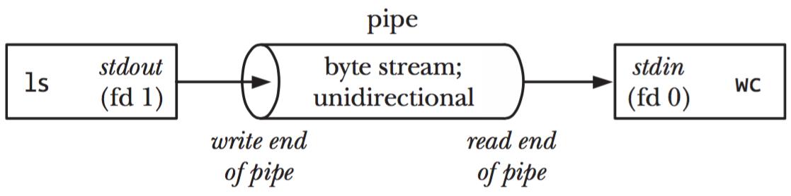
What is a pipeline?
Remember that all Unix systems standardize the following:
- All processes have a standard input stream.
- All processes have a standard output stream.
- Data streams transport text or binary data.
Therefore, the standard output stream of process A can be connected to the standard input stream of another process B.
Processes can be chained into a pipeline, each process transforming data and passing it to the next process.
Imagine a production chain, where the parts (data) go from one person (process) to the next until the final product is assembled.
A simple pipeline
The | operator (a vertical pipe) is used to connect two processes together.
Let’s use two commands, one that prints text as output and one that reads text
as input:
- The
ls(list) command produces a list of files, one by line with the-1option. - The
wc(word count) command can count words, lines (with the-loption), characters or bytes in its input.
You can pipe them together like this:
$> ls -1 | wc -l
This redirects (pipes) the output of the ls command into the input of the
wc command, which will tell us how many files there are in the listed
directory.
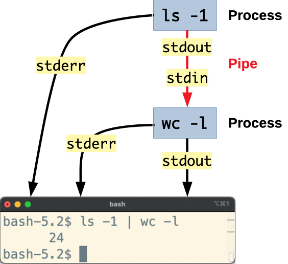
The Unix philosophy
Pipelines are one of the core features of Unix systems.
Because Unix programs can be easily chained together, they tend to be simpler and smaller. Complex tasks can be achieved by chaining many small programs together.
This is, in a few words, the Unix philosophy:
- Write programs that do one thing and do it well
- Write programs to work together
- Write programs to handle text streams, because that is a universal interface
Although many programs handle text streams, others also handle binary streams. For example, the ImageMagick library can process images and the FFmpeg library can process videos.
A more complex pipeline
This command pipeline combines five different commands, processing the text data at each step and passing it along to the next command to arrive at the final result. Each of these commands only knows how to do one job:
$> find . -type f | \
sed 's/.*\///' | \
egrep ".+\.[^\.]+$" | \
sed 's/.*\.//' | \
sort | \
uniq -c
147 jpg
10925 js
2158 json
15 less
45 map
1515 md
The final result is a list of file extensions and the number of files with that extension.
findis used to recursively list all files in the current directory.sed(stream editor) is used to obtain the files’ basenames.egrep(extended global regular expression search and print) is used to filter out names that do not have an extension.sedis used again to transform basenames into just their extension.sortis used to sort the resulting list alphabetically.uniqis used to group identical adjacent lines and count them.
References
- The Linux Process Journey - PID 0 (swapper) - Shlomi Boutnaru
- The Linux Process Journey - PID 1 (init) - Shlomi Boutnaru
- The Linux Process Journey - PID 2 (kthreadd) - Shlomi Boutnaru
- SIGINT And Other Termination Signals in Linux
- What is the main purpose of the swapper process in Unix? - superuser
- I/O Redirection (The Linux Documentation Project)
- Here Documents (The Linux Documentation Project)
- Unix/Linux - Shell Input/Output Redirections
- Signals - Unix fundamentals 201 - Ops School Curriculum